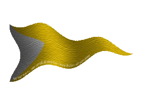
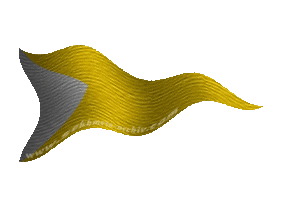

|

|
Das schwarze Brett
|
|
| Übersicht,
Anschläge und Stammtisch (RPG) |
|
Neu Toppelmopf
|
Fjokel ok Schnjokel
   |
*Eine kleine Gruppe Wichtel bahnt sich ihren Weg zwischen den Beinen hindurch und klettert auf ein Podest, welches sie wenigstens auf Augehöhe der meisten Anwesenden erhebt. Einer von ihnen tritt vor und räuspert sich quietschend, während sich die anderen dahinter kichernd puffen und necken, ohne dabei aber ihren Kakao zu verschütten*
Beste Grüße liebe Großgewachsene und Kleingebliebene,
Mein Name ist Ljosko Lokostipf und ich bekleide seit kurzem das Amt des Vize Kakaoverwalters in Fjortisar.
Für all jene die sich darunter nichts vorstellen können, bin ich sozusagen die rechte Hand des neuen Bürgermeisters Fjokel ok Schnjokel, also die Hand, welche die Kakaotasse hält und unter anderem für deren stetige Nachfüllung verantwortlich ist.
Somit ist es nun auch meine Aufgabe Euch von dem bevorstehenden frohen Ereignis zu unterrichten.
Nach langer Zeit ist heute endlich wieder der erste Tag der Kakaoerntenfreudenfestfeier gekommen, was bedeutet das die Backöfen von Fjortisar seit einige Tagen kaum mehr abkühlen und eine große Anzahl Topfenmöppe für das obligatorische Topfenmoppeln, ohne das eine Kakaoerntenfreudenfestfeier einfach keine Kakaoerntenfreudenfestfeier wäre, gebacken wurde.
Dieses Jahr wird alles noch ein wenig freudenfestiger als sonst von statten gehen, nicht weil die Kakaoernte dieses Mal besonders reich gewesen wäre, sondern weil unsere schöne Stadt Fjortisár nicht länger diesen Namen tragen wird.
In Gedenken an unsere alte Heimat Grümland und den Geburtsort so vieler von uns, wird die Stadt im Zuge dieser Festivität umbenannt und in Zukunft den Namen Neu Toppelmopf tragen, auf dass noch lange Zeit die Wichtel in ihr ein schönes Zuhause haben werden und der Frohsinn welcher jedem Toppelmopfer eigen ist, nicht verblassen möge.
*Ljosko hebt seinen Becher Kakao und die übrigen Wichtel tun es ihm gleich*
Auf Neu Toppelmopf, die Heimat der Wichtel auf Scherben.
*der Wichtelchor im Hintergrund wiederholt so lautstark es Wichteln möglich ist die ersten drei Worte und alle zusammen leeren in einem Zug ihren Kakao bevor sie fröhlich von dem Podest hüpfen um sich um die letzten Vorbereitungen der Feierlichkeiten zu kümmern*
((7.02.06 20:33 Feierlichkeiten Fjortisár wird feierlich umbenannt in Neu Toppelmopf ))
Fjokel ok Schnjokel,
Vorsteher von Neu Toppelmopf,
Kardinal im Dienste des einzig wahren Glaubens an Pheron,
Ehemann der reizenden Lilokel ok Schnjokel
Zur 17. Stunde am 20.Erntemond im Jahre 423 |
07.02.06 20:33
 |
|
| Enigma (RIP) |
*muss ihre Wichtel im Zaume halten damit sie nicht losstürmen und die schön hergerichtete Kakaobar in Beschlag nehmen.
Sie lässt sie dann aber zu den anderen Wichtelfreunden um ihrer Kakaosucht zu fröhnen, gratuliert dem Bürgermeister recht herzlich und wünscht ihm regen Kakaofluss und stets zufriedene Bürger*
Pfalzgräfin Enigma Aquila,
Vorsteherin von Akinlay,
Anführerin der glorreichen Nation "Circle of Lion´s",
Ehefrau des ehrenwerten Vincent Aquila,
Heldin des Orkensturms
Zur 19. Stunde am 20.Erntemond im Jahre 423 |
07.02.06 21:02
|
|
| Exo Zirrisys (RIP) |
Meinen Glückwunsch ich werde wohl baldigst mal vorbei schaun um die Stadt euch und eure liebreizende Frau zu treffen und alleine werd ich auch nicht kommen*lächelt*
Exo mi Lu,
Priester im Dienste des einzig wahren Glaubens an Pheron,
Killerwichtel,
Ehemann der reizenden Flocke
Zur 1. Stunde am 21.Erntemond im Jahre 423 |
07.02.06 22:17
|
|
Aahz
  |
*freut sich*
Aahz
Zur 24. Stunde am 23.Erntemond im Jahre 423 |
08.02.06 14:53
|
|
| Obsidia Schwarzfeder (RIP) |
Ah, eine gute Nachricht in turbulenten Zeiten wie diesen.
Die besten Wünsche für Neu Toppelmopf, seine Bewohner und seinen Bürgermeister. Möge Euch der Kakao niemals ausgehen.
Es grüßt
Obsidia Schwarzfeder
*in einer wichteligen Schrift darunter*
Glückwünsche, Glückwünsche, jaja, und ein rauschendes Fest mit Stömen des besten Kakaos wünsche ich Euch, meine Freunde.
Wichtelige Grüße
Eilis Gwenhwyvar
Obsidia Schwarzfeder
Zur 10. Stunde am 24.Erntemond im Jahre 423 |
08.02.06 17:16
|
|
Übersicht,
Anschläge und Stammtisch (RPG)
|
|
|
|